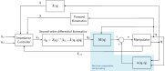
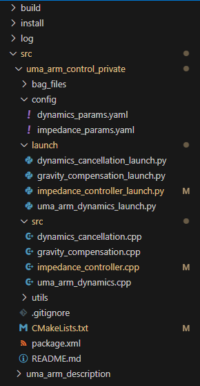
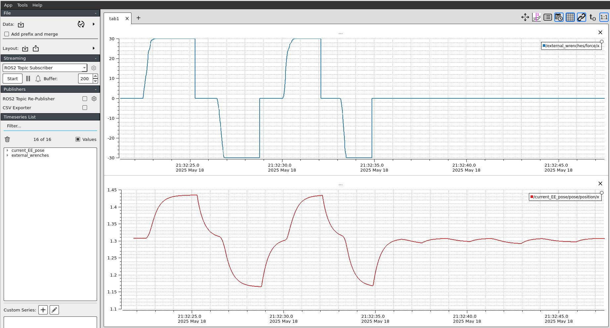
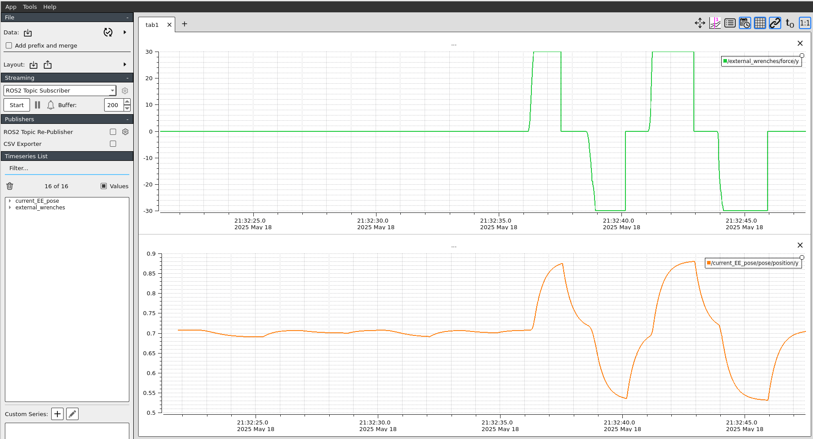
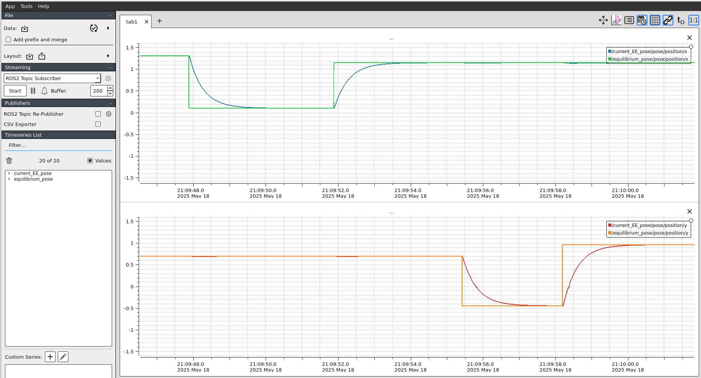

Lab Session 4: Impedance Control¶
4.1. Cartesian impedance control¶
In this lab session we are going to implement a Cartesian Impedance Controller according to the following scheme:

4.2. Controller implementation¶
The controller has two levels. First, and close to the manipulaotr, we have the dynamics compensation at the joint level (the one you did in Lab 3). Then, at a higher level, we have the Cartesian impedance controller. As this controller operates at the operational space, we will need to transform joint and Cartesian variables using the kinematrics model, and the first- and second-order differential kinematics. To implement the impedance controller you need to create a new node called impedance_controller.cpp:
Show the code
/*
Author: Juan M. Gandarias (http://jmgandarias.com)
email: jmgandarias@uma.es
- This script computes the dynamic model of a RR manipulator according to the impedance model:
F_ext - k x_error - B x'_error = M x''
where x_error = x - x_d, and x'_error = x' - x'_d
then: x'' = M^(-1)[F_ext - k x_error - B x'_error]
- To compute x_error and x'_error, we need the current x and x'.
They can be computed with the forward kinematics model and first-order differential kinematics:
Forward kinematics: x = f(q)
First-order differential kinematics: x' = J(q) q'
- We assume F_ext is given from the measures of an F/T sensor in the EE.
- The computed x'' represents the desired dynamic behavior of the manipulator at the EE level, but it must be transformed to the
joint space. It can be done with the second order differential kinematics (deriving the first-order kinematics):
First-order differential kinematics: q' = J(q)^(-1) x'
Second-order differential kinematics: q'' = J(q)^(-1)[x'' - J'(q',q)q']
Inputs: equilibrium_pose, joint_states, external_wrenches
Output: desired_joint_accelerations, current_EE_pose
*/
#include <rclcpp/rclcpp.hpp>
#include <sensor_msgs/msg/joint_state.hpp>
#include <std_msgs/msg/float64_multi_array.hpp>
#include <geometry_msgs/msg/wrench.hpp>
#include <geometry_msgs/msg/pose_stamped.hpp>
#include <chrono>
#include <Eigen/Dense>
#include <cmath>
using namespace std::chrono;
class ImpedanceControllerNode : public rclcpp::Node
{
public:
ImpedanceControllerNode()
: Node("impedance_controller_node"),
joint_positions_(Eigen::VectorXd::Zero(2)),
joint_velocities_(Eigen::VectorXd::Zero(2)),
desired_joint_accelerations_(Eigen::VectorXd::Zero(2)),
joint_torques_(Eigen::VectorXd::Zero(2)),
external_wrenches_(Eigen::VectorXd::Zero(2)),
jacobian_(Eigen::MatrixXd::Zero(2, 2)),
jacobian_derivative_(Eigen::MatrixXd::Zero(2, 2)),
equilibrium_pose_(Eigen::VectorXd::Zero(2)),
previous_time_(high_resolution_clock::now())
{
// Frequency initialization
this->declare_parameter<double>("frequency", 1000.0);
// Dynamics parameters initialization
this->declare_parameter<double>("m1", 1.0);
this->declare_parameter<double>("m2", 1.0);
this->declare_parameter<double>("l1", 1.0);
this->declare_parameter<double>("l2", 1.0);
// Impedance parameters initialization
this->declare_parameter<std::vector<double>>("M", {0, 0, 0, 0});
this->declare_parameter<std::vector<double>>("B", {0, 0, 0, 0});
this->declare_parameter<std::vector<double>>("K", {0, 0, 0, 0});
// Equilibrium pose initialization
this->declare_parameter<std::vector<double>>("q0", {0, 0});
// Get frequency [Hz] parameter and compute period [s]
double frequency = this->get_parameter("frequency").as_double();
// Get dynamic parameters
m1_ = this->get_parameter("m1").as_double();
m2_ = this->get_parameter("m2").as_double();
l1_ = this->get_parameter("l1").as_double();
l2_ = this->get_parameter("l2").as_double();
// Get impedance parameters
auto check_matrix_size = [](const std::vector<double> &vec, const std::string &name)
{
if (vec.size() != 4)
throw std::runtime_error("Matrix '" + name + "' must have exactly 4 elements.");
};
auto M_vec = this->get_parameter("M").as_double_array();
auto B_vec = this->get_parameter("B").as_double_array();
auto K_vec = this->get_parameter("K").as_double_array();
check_matrix_size(M_vec, "M");
check_matrix_size(B_vec, "B");
check_matrix_size(K_vec, "K");
mass_matrix_ = Eigen::MatrixXd::Map(M_vec.data(), 2, 2);
damping_matrix_ = Eigen::MatrixXd::Map(B_vec.data(), 2, 2);
stiffness_matrix_ = Eigen::MatrixXd::Map(K_vec.data(), 2, 2);
// Se initial equilibrium pose
joint_positions_ = Eigen::VectorXd::Map(this->get_parameter("q0").as_double_array().data(), 2);
equilibrium_pose_ = forward_kinematics();
equilibrium_pose_received_ = true;
// Create subscription to joint_states
subscription_joint_states_ = this->create_subscription<sensor_msgs::msg::JointState>(
"joint_states", 1, std::bind(&ImpedanceControllerNode::joint_states_callback, this, std::placeholders::_1));
// Create subscription to joint_states
subscription_equilibrium_pose_ = this->create_subscription<geometry_msgs::msg::PoseStamped>(
"equilibrium_pose", 1, std::bind(&ImpedanceControllerNode::equilibrium_pose_callback, this, std::placeholders::_1));
// Create subscription to joint_torques
external_wrenches_subscription_ = this->create_subscription<geometry_msgs::msg::Wrench>(
"external_wrenches", 1, std::bind(&ImpedanceControllerNode::external_wrenches_callback, this, std::placeholders::_1));
// Create publishers for joint acceleration
publisher_acceleration_ = this->create_publisher<std_msgs::msg::Float64MultiArray>("desired_joint_accelerations", 1);
// Create publishers for EE pose
publisher_EE_pose_ = this->create_publisher<geometry_msgs::msg::PoseStamped>("current_EE_pose", 1);
// Set the timer callback at a period (in milliseconds, multiply it by 1000)
timer_ = this->create_wall_timer(
std::chrono::milliseconds(static_cast<int>(1000 / frequency)), std::bind(&ImpedanceControllerNode::timer_callback, this));
}
// Timer callback - when there is a timer callback, computes the new joint acceleration, velocity and position and publishes them
void timer_callback()
{
if (!joint_states_received_ || !external_wrench_received_ || !equilibrium_pose_received_)
{
RCLCPP_WARN_THROTTLE(this->get_logger(), *this->get_clock(), 2000,
"Waiting for all inputs: joint_states [%s], external_wrenches [%s], equilibrium_pose [%s]",
joint_states_received_ ? "OK" : "MISSING",
external_wrench_received_ ? "OK" : "MISSING",
equilibrium_pose_received_ ? "OK" : "MISSING");
return;
}
cartesian_pose_ = forward_kinematics(); // Calculate cartesian pose
update_jacobians(); // Update jacobian and jacobian derivative
cartesian_velocities_ = differential_kinematics(); // Calculate Cartesian velocity with first-order differental kinematics
desired_cartesian_accelerations_ = impedance_controller(); // Calculate desired cartesian accelerations with impedance controller
desired_joint_accelerations_ = calculate_desired_joint_accelerations(); // Calculate the desired_joint_accelerations
if ((desired_joint_accelerations_.array().isNaN()).any())
{
RCLCPP_ERROR(this->get_logger(), "Computed NaN in desired_joint_accelerations. Skipping publish.");
return;
}
// Publish data
publish_data();
}
private:
// joint_states subscription callback - when a new message arrives, updates the dynamics cancellation and publishes teh joint_torques_
void joint_states_callback(const sensor_msgs::msg::JointState::SharedPtr msg)
{
// Assuming the joint names are "joint_1" and "joint_2"
auto joint1_index = std::find(msg->name.begin(), msg->name.end(), "joint_1") - msg->name.begin();
auto joint2_index = std::find(msg->name.begin(), msg->name.end(), "joint_2") - msg->name.begin();
if (std::isnan(msg->position[joint1_index]) || std::isnan(msg->position[joint2_index]) ||
std::isnan(msg->velocity[joint1_index]) || std::isnan(msg->velocity[joint2_index]))
{
RCLCPP_WARN(this->get_logger(), "Received NaN in joint states. Skipping update.");
return;
}
if (static_cast<std::vector<std::string>::size_type>(joint1_index) < msg->name.size() &&
static_cast<std::vector<std::string>::size_type>(joint2_index) < msg->name.size())
{
joint_positions_(0) = msg->position[joint1_index];
joint_positions_(1) = msg->position[joint2_index];
joint_velocities_(0) = msg->velocity[joint1_index];
joint_velocities_(1) = msg->velocity[joint2_index];
}
RCLCPP_INFO(this->get_logger(), "Received joint state: pos = [%.3f, %.3f], vel = [%.3f, %.3f]",
joint_positions_(0), joint_positions_(1),
joint_velocities_(0), joint_velocities_(1));
joint_states_received_ = true;
}
// joint_states subscription callback - when a new message arrives, updates the dynamics cancellation and publishes teh joint_torques_
void equilibrium_pose_callback(const geometry_msgs::msg::PoseStamped::SharedPtr msg)
{
equilibrium_pose_(0) = msg->pose.position.x;
equilibrium_pose_(1) = msg->pose.position.y;
equilibrium_pose_received_ = true;
RCLCPP_INFO(this->get_logger(),
"Equilibrium pose updated via topic: [%.3f, %.3f]",
equilibrium_pose_(0), equilibrium_pose_(1));
}
// Subscription callback - when a new message arrives, updates external_wrenches_
void external_wrenches_callback(const geometry_msgs::msg::Wrench::SharedPtr msg)
{
auto forces = msg->force;
// This change of coordinates is based on how the dynamic model is define in the 2D plane and the EE frame is defined in the 3D plane
external_wrenches_(0) = forces.x;
external_wrenches_(1) = forces.y;
external_wrench_received_ = true;
}
// Method to calculate forward kinematics
Eigen::VectorXd forward_kinematics()
{
// Placeholder for forward kinematics x = [l1 * cos(q1) + l2 * cos(q1 + q2), l2 * sin(q1) + l2 * sin(q1 + q2)]
Eigen::VectorXd x(2);
x << 0, 0;
return x;
}
// Method to update jacobian and jacobian derivative
void update_jacobians()
{
// Placeholder for jacobian and jacobian_derivative matrices
// Calculate J(q)
jacobian_ << 0,0,
0,0;
// Calculate J'(q,q')
jacobian_derivative_ << 0,0,
0,0;
RCLCPP_INFO(this->get_logger(), "Jacobian:\n[%.3f, %.3f]\n[%.3f, %.3f]",
jacobian_(0, 0), jacobian_(0, 1),
jacobian_(1, 0), jacobian_(1, 1));
double det = jacobian_.determinant();
RCLCPP_INFO(this->get_logger(), "Jacobian determinant: %.6f", det);
}
// Method to calculate Cartesian velocity with the first-order differential kinematics
Eigen::MatrixXd differential_kinematics()
{
// Placeholder for first-order differential kinematics
Eigen::VectorXd x_dot(2);
x_dot << 0,0;
return x_dot;
}
// Method to compute the impedance controller
Eigen::VectorXd impedance_controller()
{
// Placeholder for impedance controller calculation
Eigen::VectorXd x_dot_d = Eigen::VectorXd::Zero(2); // We assume desired cartesian velocity = 0
// Calculate Cartesian errors
Eigen::VectorXd x_error << 0,0;
Eigen::VectorXd x_dot_error << 0,0;
// Replace with actual impedance controller equation: x'' = M^(-1)[F_ext - k x_error - B x'_error]
Eigen::VectorXd x_ddot(2);
x_ddot << 0,0;
return x_ddot;
}
// Method to calculate joint acceleration with the inverse of second-order differential kinematics
Eigen::VectorXd calculate_desired_joint_accelerations()
{
// Placeholder for the second-order differential kinematics
// q'' = J(q)^(-1)[x'' - J'(q,q')q']
RCLCPP_INFO(this->get_logger(), "x_ddot: [%.3f, %.3f]",
desired_cartesian_accelerations_(0), desired_cartesian_accelerations_(1));
q_ddot << 0,0;
return q_ddot;
}
// Method to publish the joint data
void publish_data()
{
// publish desired joint acceleration
auto acceleration_msg = std_msgs::msg::Float64MultiArray();
acceleration_msg.data.assign(desired_joint_accelerations_.data(), desired_joint_accelerations_.data() + desired_joint_accelerations_.size());
publisher_acceleration_->publish(acceleration_msg);
// publish current EE pose
auto EE_pose_msg = geometry_msgs::msg::PoseStamped();
EE_pose_msg.pose.position.x = cartesian_pose_[0];
EE_pose_msg.pose.position.y = cartesian_pose_[1];
publisher_EE_pose_->publish(EE_pose_msg);
}
// Member variables
// Publishers and subscribers
rclcpp::Subscription<sensor_msgs::msg::JointState>::SharedPtr subscription_joint_states_;
rclcpp::Subscription<geometry_msgs::msg::PoseStamped>::SharedPtr subscription_equilibrium_pose_;
rclcpp::Subscription<geometry_msgs::msg::Wrench>::SharedPtr external_wrenches_subscription_;
rclcpp::Publisher<std_msgs::msg::Float64MultiArray>::SharedPtr publisher_acceleration_;
rclcpp::Publisher<geometry_msgs::msg::PoseStamped>::SharedPtr publisher_EE_pose_;
rclcpp::TimerBase::SharedPtr timer_;
// Joint variables
Eigen::VectorXd joint_positions_;
Eigen::VectorXd joint_velocities_;
Eigen::VectorXd desired_joint_accelerations_;
Eigen::VectorXd joint_torques_;
Eigen::VectorXd external_wrenches_;
// Jacobian matrices
Eigen::MatrixXd jacobian_;
Eigen::MatrixXd jacobian_derivative_;
// Impedance matrices
Eigen::MatrixXd mass_matrix_;
Eigen::MatrixXd damping_matrix_;
Eigen::MatrixXd stiffness_matrix_;
// Cartesian variables
Eigen::VectorXd equilibrium_pose_;
Eigen::VectorXd cartesian_pose_;
Eigen::VectorXd cartesian_velocities_;
Eigen::VectorXd desired_cartesian_accelerations_;
// dynamic parameters variables
double m1_;
double m2_;
double l1_;
double l2_;
// Variable to store the previous callback time and elapsed time
time_point<high_resolution_clock> previous_time_;
double elapsed_time_;
// Flag to ensure joint states, external wrenches or equilibrium poses have been received
bool joint_states_received_ = false;
bool external_wrench_received_ = false;
bool equilibrium_pose_received_ = false;
};
int main(int argc, char *argv[])
{
rclcpp::init(argc, argv);
auto node = std::make_shared<ImpedanceControllerNode>();
rclcpp::spin(node);
rclcpp::shutdown();
return 0;
}
This node subscribes to:
- The desired equilibrium pose: equilibrium_pose (\(\mathbf{x}_d\))
- The current joint states: joint_states (\(\mathbf{q}, \dot{\mathbf{q}}\))
- The external wrenches: external_wrenches (\(\mathbf{f}_{ext}\))
In each loop (timer_callback()), the controller does the following:
Show the code
// Timer callback - when there is a timer callback, computes the new joint acceleration, velocity and position and publishes them
void timer_callback()
{
if (!joint_states_received_ || !external_wrench_received_ || !equilibrium_pose_received_)
{
RCLCPP_WARN_THROTTLE(this->get_logger(), *this->get_clock(), 2000,
"Waiting for all inputs: joint_states [%s], external_wrenches [%s], equilibrium_pose [%s]",
joint_states_received_ ? "OK" : "MISSING",
external_wrench_received_ ? "OK" : "MISSING",
equilibrium_pose_received_ ? "OK" : "MISSING");
return;
}
cartesian_pose_ = forward_kinematics(); // Calculate cartesian pose
update_jacobians(); // Update jacobian and jacobian derivative
cartesian_velocities_ = differential_kinematics(); // Calculate Cartesian velocity with first-order differental kinematics
desired_cartesian_accelerations_ = impedance_controller(); // Calculate desired cartesian accelerations with impedance controller
desired_joint_accelerations_ = calculate_desired_joint_accelerations(); // Calculate the desired_joint_accelerations
if ((desired_joint_accelerations_.array().isNaN()).any())
{
RCLCPP_ERROR(this->get_logger(), "Computed NaN in desired_joint_accelerations. Skipping publish.");
return;
}
// Publish data
publish_data();
}
-
 First, the controller checks that the
First, the controller checks that the joint_states, theexternal_wrenches, and theequilibrium_poseare received correctly. Otherwise, the controller doesn't publish any reference.if (!joint_states_received_ || !external_wrench_received_ || !equilibrium_pose_received_) { RCLCPP_WARN_THROTTLE(this->get_logger(), *this->get_clock(), 2000, "Waiting for all inputs: joint_states [%s], external_wrenches [%s], equilibrium_pose [%s]", joint_states_received_ ? "OK" : "MISSING", external_wrench_received_ ? "OK" : "MISSING", equilibrium_pose_received_ ? "OK" : "MISSING"); return; } -
You have to implement this method according to the forward kinematics: Then, the controller computes the forward kinematics needed to get \(\mathbf{x}\) from \(\mathbf{q}\) with the method
Then, the controller computes the forward kinematics needed to get \(\mathbf{x}\) from \(\mathbf{q}\) with the method forward_kinematics():\[ \mathbf{x} = \left[ \begin{matrix} \\ l_1 cos(q_1) + l_2 cos(q_1 + q_2)\\ l_2 sin(q_1) + l_2 sin(q_1 + q_2)\\ \\ \end{matrix}\right] \] -
The controller needs to calculate the Jacobians based on the new data
You have to implement the
update_jacobians()method according to the following equations:\[ \mathbf{J}(\mathbf{q}) = \left[\begin{matrix} \\ -l_1 sin(q_1) - l_2 sin(q_1 + q_2) & -l_2 sin(q_1 + q_2)\\ l_1 cos(q_1) + l_2 cos(q_1 + q_2) & l_2 cos(q_1 + q_2)\\ \\ \end{matrix}\right] \]\[ \dot{\mathbf{J}}(\mathbf{q}, \dot{\mathbf{q}}) = \left[\begin{matrix} \\ -l_1 cos(q_1) \dot{q}_1 - l_2 cos(q_1 + q_2) \dot{q}_1 & -l_2 cos(q_1 + q_2) \dot{q}_2\\ -l_1 sin(q_1) \dot{q}_1 - l_2 sin(q_1 + q_2) \dot{q}_1 & -l_2 sin(q_1 + q_2) \dot{q}_2\\ \\ \end{matrix}\right] \]// Method to update jacobian and jacobian derivative void update_jacobians() { // Placeholder for jacobian and jacobian_derivative matrices // Calculate J(q) jacobian_ << 0,0, 0,0; // Calculate J'(q,q') jacobian_derivative_ << 0,0, 0,0; RCLCPP_INFO(this->get_logger(), "Jacobian:\n[%.3f, %.3f]\n[%.3f, %.3f]", jacobian_(0, 0), jacobian_(0, 1), jacobian_(1, 0), jacobian_(1, 1)); double det = jacobian_.determinant(); RCLCPP_INFO(this->get_logger(), "Jacobian determinant: %.6f", det); } -
Once \(\mathbf{J}(\mathbf{q})\) has been computed, the controller can compute the
cartesian_velocities_(\(\mathbf{x}\)) using the first-order differential kinematics (i.e., the Jacobian):cartesian_velocities_ = differential_kinematics(); // Calculate Cartesian velocity with first-order differental kinematicsYou need to implement the
differential_kinematics()method according to the following equations:\[ \dot{\mathbf{x}} = \mathbf{J}(\mathbf{q}) \dot{\mathbf{q}} \] -
Once we have all the required data, we can compute de
desired_cartesian_accelerations_(\(\ddot{\mathbf{x}}_d\)) according to the desired impedance behavior with the methodimpedance_controller():desired_cartesian_accelerations_ = impedance_controller(); // Calculate desired cartesian accelerations with impedance controllerYou can compute the desired cartesian accelerations according to the second-order impedance model:
\[ \mathbf{M} \ddot{\mathbf{\~{x}}} + \mathbf{B} \dot{\mathbf{\~{x}}} + \mathbf{B} \mathbf{\~{x}} = \mathbf{f}_{ext} \]Hence, if we assume that the only contribution to the motion of the robot is that given by the mechanical impedance model:
\[ \ddot{\mathbf{x}}_d = \mathbf{M}^{-1}( -\mathbf{B} \dot{\mathbf{\~{x}}} - \mathbf{B} \mathbf{\~{x}} + \mathbf{f}_{ext}) \]where
\[ \begin{split} \mathbf{\~{x}} &= \mathbf{x} - \mathbf{x}_d\\ \dot{\mathbf{\~{x}}} &= \dot{\mathbf{x}} - \dot{\mathbf{x}}_d \end{split} \]// Method to compute the impedance controller Eigen::VectorXd impedance_controller() { // Placeholder for impedance controller calculation Eigen::VectorXd x_dot_d = Eigen::VectorXd::Zero(2); // We assume desired cartesian velocity = 0 // Calculate Cartesian errors Eigen::VectorXd x_error << 0,0; Eigen::VectorXd x_dot_error << 0,0; // Replace with actual impedance controller equation: x'' = M^(-1)[F_ext - k x_error - B x'_error] Eigen::VectorXd x_ddot(2); x_ddot << 0,0; return x_ddot; } -
Now, we can calculate the
desired_joint_accelerationswith the second-order differential kinematicsdesired_joint_accelerations_ = calculate_desired_joint_accelerations(); // Calculate the desired_joint_accelerationsThe second-order differential kinematics can be calculated as:
\[ \begin{split} \ddot{\mathbf{x}} &= \mathbf{J}(\mathbf{q}) \ddot{\mathbf{q}} + \dot{\mathbf{J}}(\mathbf{q}, \dot{\mathbf{q}}) \dot{\mathbf{q}}\\ \ddot{\mathbf{q}} &= \mathbf{J}(\mathbf{q})^{-1}[\ddot{\mathbf{x}} - \dot{\mathbf{J}}(\mathbf{q}, \dot{\mathbf{q}}) \dot{\mathbf{q}}] \end{split} \]// Method to calculate joint acceleration with the inverse of second-order differential kinematics Eigen::VectorXd calculate_desired_joint_accelerations() { // Placeholder for the second-order differential kinematics // q'' = J(q)^(-1)[x'' - J'(q,q')q'] RCLCPP_INFO(this->get_logger(), "x_ddot: [%.3f, %.3f]", desired_cartesian_accelerations_(0), desired_cartesian_accelerations_(1)); q_ddot << 0,0; return q_ddot; } -
Finally, the controller checks that the accelerations are calculated correctly before publishing the data
As we did in Lab 3, you also need to create the impedance_controller_launch.py:
Show the code
import os
from launch import LaunchDescription
from launch_ros.actions import Node
from ament_index_python.packages import get_package_share_directory
def generate_launch_description():
config = os.path.join(
get_package_share_directory('uma_arm_control'),
'config',
'impedance_params.yaml'
)
impedance_controller_node = Node(
package='uma_arm_control',
executable='impedance_controller',
name='impedance_controller',
output='screen',
parameters=[config]
)
return LaunchDescription([impedance_controller_node])
Hence, your workspace will look like this:

4.3. Experiment 1:¶


Question
- Does the forces applied in axis X generate motions in axis Y? And does the forces applied in axis Y generate motions in axis X?
- Can you explain why applying forces in one axis generate motions in the other axis?
- How do you think this phenomena can be reduced/mitigated?
Question
- What are the effects of changing the impedance parameters (
M,B,K) in theimpedance_params.yamlfile? - What are the effects of having a "high impedance" in axis X and "low impedance" in axis Y?
4.4. Experiment 2:¶

Question
-
Play with the simulation by publishing different desired equilibrium poses. Test the simulation to the extreme by taking the robot to difficult joint configurations. Don't worry about the robot, it's just a simulation and it won't break :)
-
Did you find that the robot makes strange or unwanted motions, can you report them and explain why it happens?